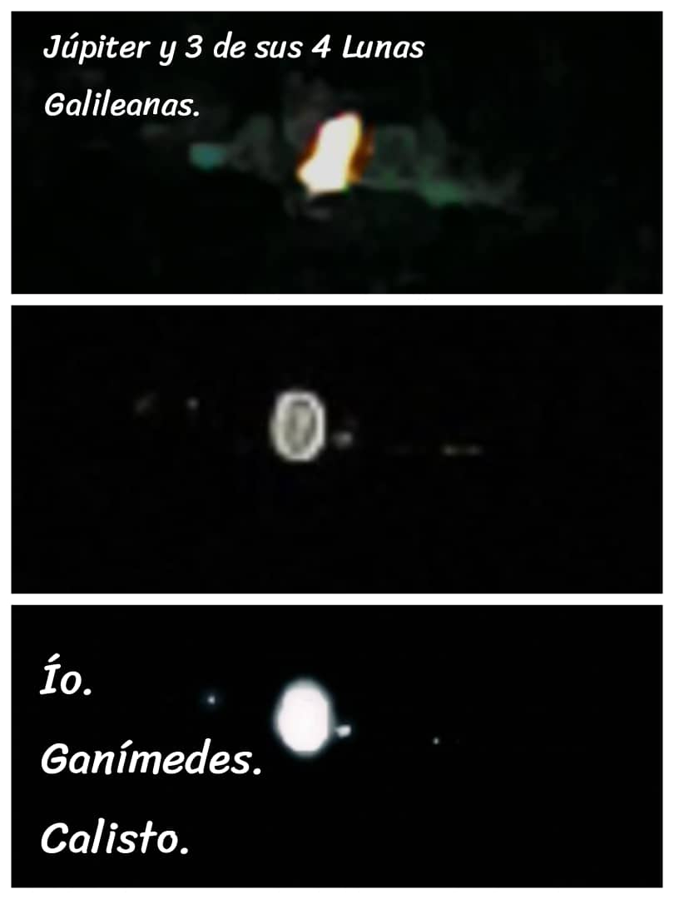

SAID
Investigador
Misión: Said Space
Especialidad: Ciencias e Ingeniería
Base: Titan Tech Orbital
Estado: Explorando Nuevos Mundos
Archivo de Misiones



Proyecto Astrofísica
Observación astronómica de cuerpos celestes: Registro fotográfico de la Luna y el sistema de Júpiter.
🛰️
Said Space Robotics
Diseño y configuración de sistemas autónomos para exploración en entornos de baja gravedad.
🌌
Nebulosa Visual
Procesamiento de imágenes de campo profundo para la identificación de cúmulos estelares.